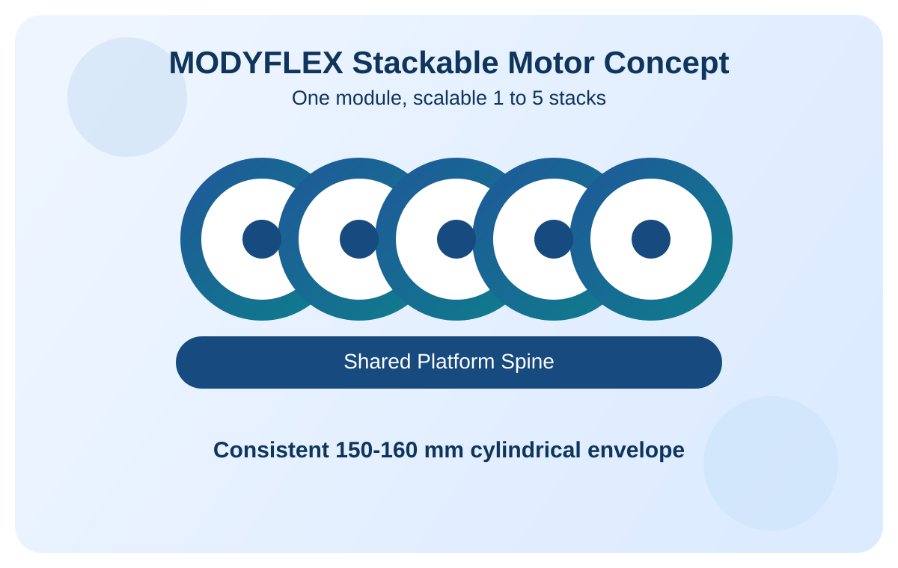
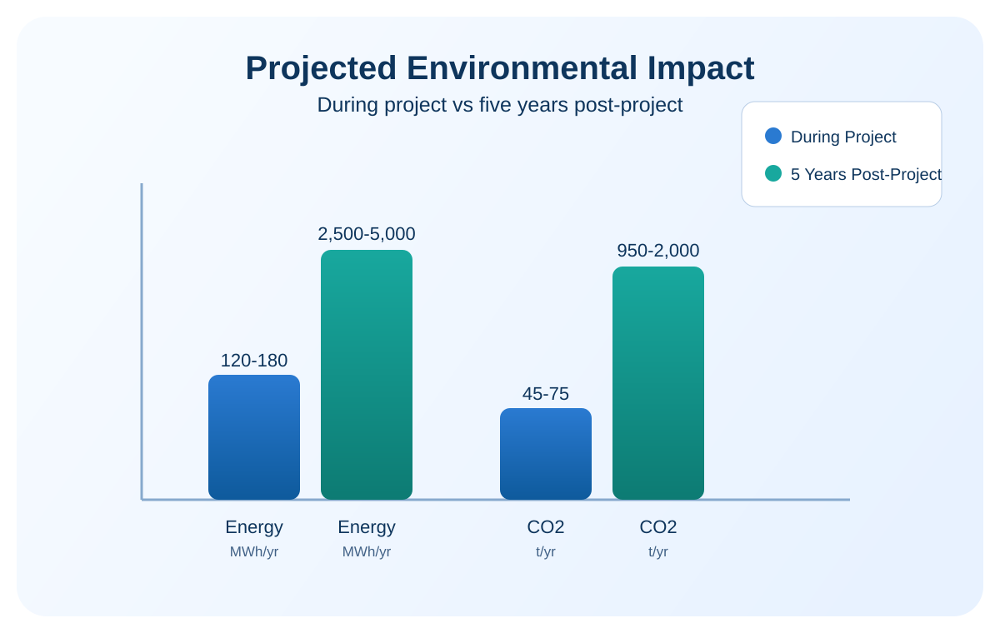
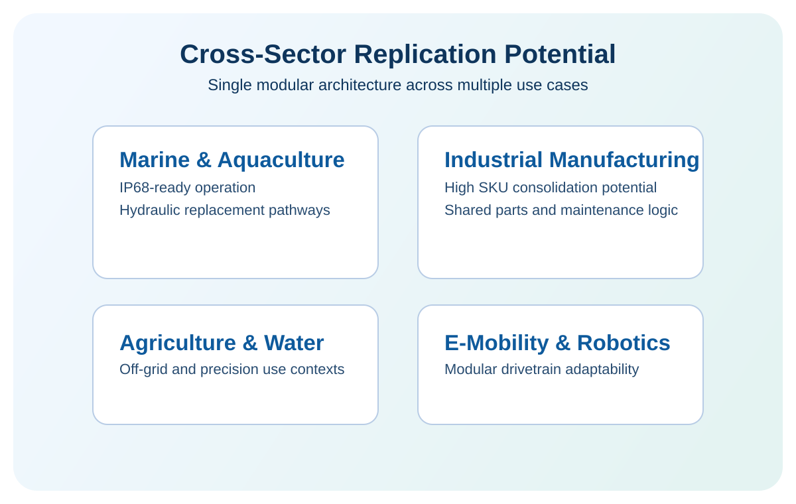

MODYFLEX
Modular stackable axial-flux drive platform for circular, resource-efficient industrial applications. One architecture scales from low-power single-use needs to multi-motor industrial duty without redesign.

Problem in Current Motor Landscape
Scale and Inefficiency
- The EU installed motor base is vast, with strong concentration in sub-10 kW use cases.
- More than 30% of installed motors are oversized for actual duty.
- Oversizing can waste 15-40% of input energy as heat.
Fragmentation and Circularity Gap
- Sector-specific motor-gearbox combinations create high SKU complexity.
- Typical sectors carry 50-100 dedicated SKUs, increasing tooling and logistics burden.
- Replace-rather-than-repair practices increase e-waste and embedded energy loss.
MODYFLEX Concept
Universal Building Block
A single air-core axial-flux unit acts as the base module. Stacking 1 to 5 units scales continuous output from around 1 kW to above 10 kW.
- 48V and 100V configurations within one product logic.
- Linear stack scaling supports broader application fit with fewer custom designs.
Common Platform Envelope
- Motors, ESC-2/ESC-5 controllers, and reducers share a 150-160 mm envelope.
- Reducer range 1:3 to 1:50 in a consistent bolt-on architecture.
- Integrated encoder and closed-loop FOC for precise control across variants.
High Value Proposition for LIFE Reviewers
Technical and Operational Value
- Standardized stackable architecture reduces redesign cycles across sectors.
- Platform reuse enables faster deployment in marine, industrial, and agriculture contexts.
- Tool-free reducer swapping supports adaptable field operation.
Environmental and Circular Value
- Rare-earth material demand reduced by 30-50% per deployment context.
- Hydraulic substitution removes oil leakage risk in sensitive marine operations.
- High parts commonality (>80%) supports repairability and life-extension pathways.
Evidence and Expected Impact


Implementation and Replication Path
M1-M18 | R&D Validation
Bench validation of single module and integrated stack + reducer configurations.
M12-M36 | Integration and Demonstration
Deploy pilots in Norway and Bulgaria, measure operational performance against baseline.
M24-M42 | Industrialization
Complete pre-compliance, final replication toolkit, and roadmap toward TRL 9.